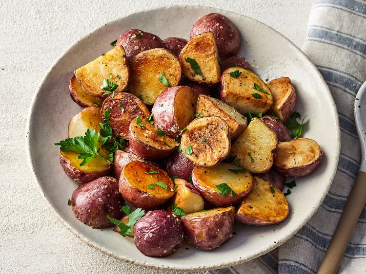

Home
Roasted New Red Potatoes

Description
Roasted red potatoes at their best — plain and simple. Red potatoes are
tossed with olive oil, salt, and pepper, then roasted to perfection.
- Prep Time: 5 mins
- Cook Time: 20 mins
- Total Time: 25 mins
- Servings: 8
Ingredients
- 3 pounds small red new potatoes, halved
- ¼ cup olive oil
- 1 teaspoon salt and freshly ground black pepper